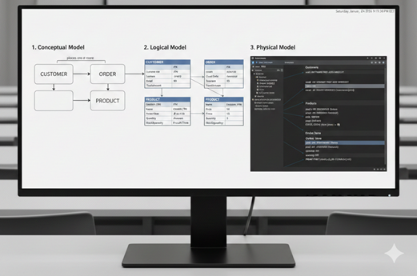

From Concept to Code
The Data Modeling Journey
Data modeling is the process of creating a visual representation of either a whole information system or parts of it to communicate connections between data points and structures.
Think of it as the architectural blueprint for a database.
We move through three distinct stages of abstraction: Conceptual, Logical, and Physical.
1. The Conceptual Data Model
The goal here is understanding the business. It's a high-level overview that defines what data the system will contain without worrying about how it will be stored.
Audience: Business stakeholders and architects.
Key Elements: Entities (the "things" like Customers or Products) and Relationships (how they interact).
Purpose: To define the scope of the project and ensure everyone agrees on business rules.
2. The Logical Data Model
Now, we add structure. This model defines the data in more detail but remains independent of the specific database software (like MySQL or MongoDB) you'll eventually use.
Audience: Data architects and business analysts.
Key Additions:
- Attributes: The specific data points (e.g., "Customer Name," "Email").
- Primary Keys: Unique identifiers for each record.
- Normalization: Organizing data to reduce redundancy.
Purpose: To create a standard map of data rules and structures.
3. The Physical Data Model
This is the implementation phase. The model is designed for a specific database management system (DBMS). It accounts for performance, storage, and the actual technical constraints of the hardware.
Audience: Database Administrators (DBAs) and Developers.
Key Additions:
- Data Types: (e.g., VARCHAR, INTEGER, DATETIME).
- Foreign Keys: Linking tables together physically.
- Indexes and Constraints: Optimizing for speed and data integrity.
Purpose: To generate the actual SQL code (DDL) to build the database.
Comparison Summary
| Feature | Conceptual | Logical | Physical |
|---|---|---|---|
| Focus | Business requirements | Data rules/structure | Technical implementation |
| Detail Level | Low (High-level) | Medium | High (Specific) |
| Hardware Dependent? | No | No | Yes |
| Target Audience | Business owners | Data Architects | Developers/DBAs |
Key Takeaway
The transition from conceptual to physical is a process of increasing granularity.
- If you skip the conceptual phase, you risk building a technically perfect database that doesn't actually solve the business's problems.
- If you skip the physical phase, you'll have a great idea that never actually runs.
E-Commerce Example
Phase 1: The Conceptual Model
Goal: Identify the "nouns" of the business.
At this stage, we aren't thinking about tables or code—just the big ideas.
In a brainstorming session with a shop owner, we'd identify these Entities:
- Customer: The person buying.
- Product: What is being sold.
- Order: The transaction record.
The Relationships:
- A Customer places an Order.
- An Order contains one or more Products.
Phase 2: The Logical Model
Goal: Define the rules and the details (Attributes).
Now we decide what information we need to capture for each entity and how they link together.
We also apply Normalization to ensure we aren't repeating data (e.g., we don't store the customer's address inside every single order record; we link it back to the Customer).
Customer Entity:
- Attributes: CustomerID (Key), First Name, Last Name, Email.
Order Entity:
- Attributes: OrderID (Key), OrderDate, TotalAmount.
Product Entity:
- Attributes: ProductID (Key), Name, Price, StockQuantity.
The Logic: We realize an Order can have many Products, and a Product can be in many Orders.
This is a Many-to-Many relationship, so we create a "bridge" called Order_Items to track which products are in which order.
Phase 3: The Physical Model
Goal: Write the "blueprint" for the machine.
Here, we get technical. We choose a database (let's assume a Relational DB like PostgreSQL) and assign Data Types.
| Table | Column | Data Type | Constraints |
|---|---|---|---|
| Customers | cust_id |
INT |
Primary Key, Auto-increment |
email |
VARCHAR(255) |
Unique, Not Null | |
| Orders | order_id |
INT |
Primary Key |
cust_id |
INT |
Foreign Key (references Customers) | |
order_date |
TIMESTAMP |
Default: Current Time | |
| Products | prod_id |
INT |
Primary Key |
price |
DECIMAL(10,2) |
Must be > 0 |
Pro-tip: In the physical stage, we care about performance.
We might add an Index on email because we know we'll be searching for customers by their email address constantly during login.
From Design to Reality
If we were to translate that physical model into code, it looks like this:
CREATE TABLE Products (
prod_id SERIAL PRIMARY KEY,
name VARCHAR(100),
price DECIMAL(10, 2) NOT NULL
);Why this flow matters
If you jumped straight to the Physical stage, you might forget the "Order_Items" bridge.
Suddenly, your database can only handle one product per order.
By starting Conceptually, you caught that business requirement before a single line of code was written.
And now, Let us generate the ERD:
